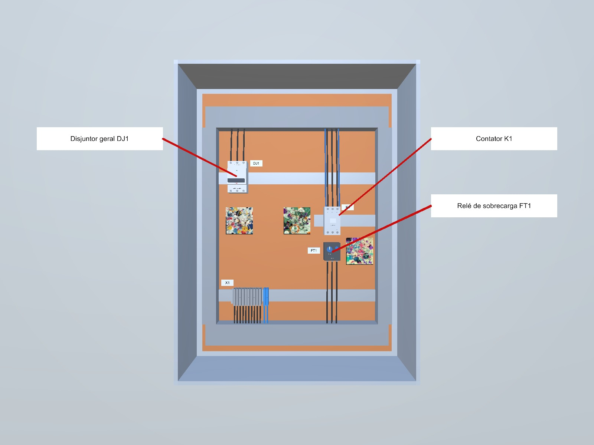

Versão do conteúdo: 0.1-provisoria

| ID | Nome | Função | Alerta de segurança |
|---|---|---|---|
| DJ1 | Disjuntor geral DJ1 | Liga e desliga a alimentação de todo o painel e protege contra curto-circuito. | Ponto de seccionamento. Em um painel real, só é manuseado com EPI e autorização. |
| K1 | Contator K1 | Chave eletromagnética que liga e desliga o motor a partir do circuito de comando. | Bornes L1/L2/L3 podem estar energizados se o disjuntor estiver ligado. |
| FT1 | Relé de sobrecarga FT1 | Desarma o comando do motor quando a corrente passa do valor ajustado. | Não altere o ajuste de corrente sem orientação do responsável. |
| Etapa | Componente | Instrução | Alerta | OK |
|---|---|---|---|---|
| 1. Localizar o disjuntor geral | Disjuntor geral DJ1 | Identifique o disjuntor geral DJ1, que alimenta o painel. | Este treinamento usa painel desenergizado. Em campo, confirme o desligamento antes de qualquer contato. | |
| 2. Confirmar posição desligado | Disjuntor geral DJ1 | Indique o DJ1 e verifique se a alavanca está na posição DESLIGADO. | ||
| 3. Simular bloqueio e etiquetagem | Disjuntor geral DJ1 | Indique onde o cadeado e a etiqueta de bloqueio seriam instalados. | O bloqueio impede que outra pessoa religue o circuito durante a manutenção. | |
| 4. Localizar o contator | Contator K1 | Identifique o contator K1 do motor. | ||
| 5. Localizar o relé de sobrecarga | Relé de sobrecarga FT1 | Identifique o relé de sobrecarga FT1, montado junto ao contator. | ||
| 6. Simular teste de ausência de tensão | Contator K1 | Indique os bornes de entrada L1/L2/L3 do K1, onde seria feito o teste de ausência de tensão. | Em campo, o teste de ausência de tensão é obrigatório antes de tocar nos bornes. | |
| 7. Conferir a corrente de ajuste | Relé de sobrecarga FT1 | Indique o FT1 e leia o valor de corrente no seletor de ajuste. | ||
| 8. Inspecionar bornes de saída | Contator K1 | Indique o K1 e observe os bornes de saída T1/T2/T3. | ||
| 9. Identificar o botão de rearme | Relé de sobrecarga FT1 | Indique o FT1 e localize o botão de rearme (reset). | ||
| 10. Conferir a identificação do circuito | Disjuntor geral DJ1 | Indique o DJ1 e leia a etiqueta de identificação do circuito. | ||
| 11. Identificar os terminais da bobina | Contator K1 | Indique o K1 e localize os terminais da bobina A1 e A2. | ||
| 12. Identificar o contato auxiliar | Relé de sobrecarga FT1 | Indique o FT1 e localize o contato auxiliar NF 95-96. | ||
| 13. Concluir inspeção do relé | Relé de sobrecarga FT1 | Indique o FT1 para registrar a inspeção do relé como concluída. | ||
| 14. Concluir inspeção do contator | Contator K1 | Indique o K1 para registrar a inspeção do contator como concluída. | ||
| 15. Simular retirada do bloqueio | Disjuntor geral DJ1 | Indique o DJ1, onde o bloqueio seria retirado ao fim do serviço. | Em campo, só quem instalou o bloqueio pode retirá-lo, e apenas com todos afastados do painel. |